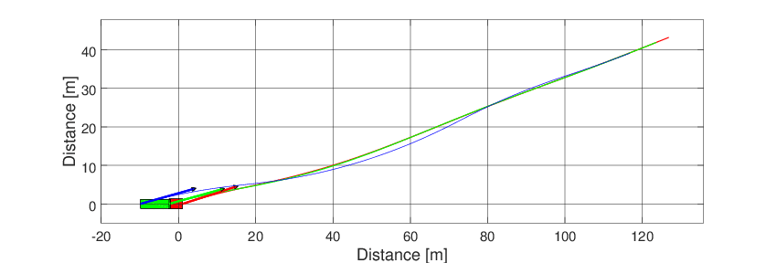

OpenVD: Open Vehicle Dynamics¶
Open source simulation package for Octave/Matlab.

Fig. 1 Animation of the articulated vehicle model. Source: Template Articulated
This package is an open source initiative that provides vehicle models and graphics features for vehicle dynamics simulation of simple and articulated vehicles.